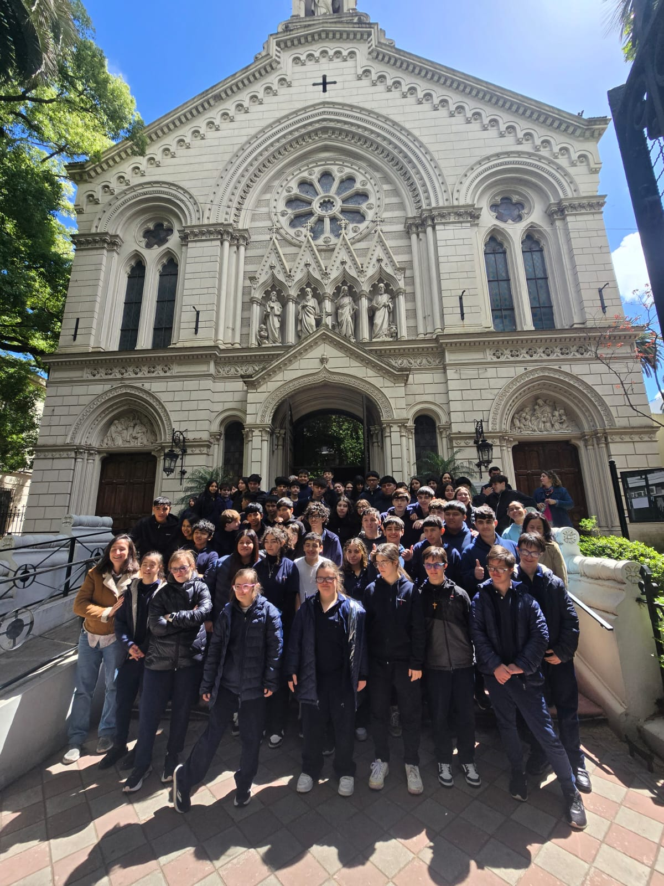

Celebración de la Santa Misa en el Santuario Jesús Sacramentado (JESA). Se llevó a cabo 2 misas donde participaron los alumnos de 1º, 2º y Postpri1 y en la 2da misa los alumnos de 3º,4º,5º y Postpri 2.
Por Victoria Garcia de Olivera de 5° B
El miércoles 15 de octubre de 2025, el Ciclo Orientado (3°, 4° y 5° años) y PostPri 2 se reunieron en el Santuario Jesús Sacramentado para celebrar la Santa Misa en comunidad. Fue un momento para rezar y agradecer por todas las cosas buenas que les suceden. Dieron las gracias y oraron por el bienestar de toda la comunidad del CEAES.
También, el día 29 de octubre de 2025, asistió el Ciclo Básico (1° y 2° años) y PostPri 1 al Santuario para celebrar una Santa Misa en comunidad.
Dos días de misa y oración para agradecer y pedir por el año compartido y las experiencias vividas.